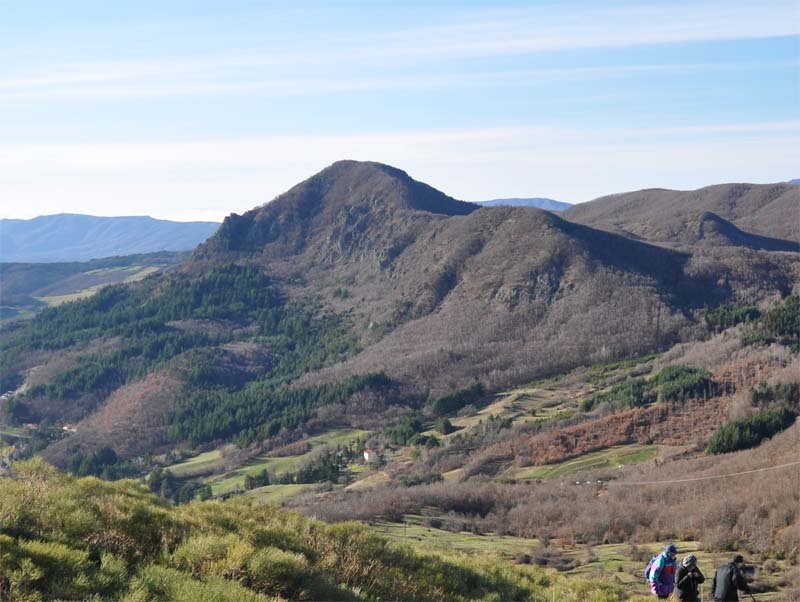

Prossima camminata
Sabato 24 Maggio ore 8,30 ritrovo in piazza Gitti, di fronte al municipio di Monghidoro, ore 9,00 partenza in auto per Covigliaio e salita al Sasso di Castro, rientro previsto per le ore 13,00 -13,30. (In caso di tempo incerto saranno decise destinazioni alternative)

Sasso di Castro e Monte Rosso (dal versante sud di Monte Beni)
La salita al Sasso di Castro ha inizio dal parcheggio del Faggiotto che si trova poco oltre Covigliaio. Lasciate le auto, si risale una strada sterrata abbastanza ripida. Si lascia un primo sentiero a sinistra con l'indicazione per l'Eremo. Si prosegue fino ad un secondo bivio da cui si prende il sentiero a sinistra che costeggia, con brevi saliscendi, tutto il fianco del monte in direzione sud (bellissimi scorci). Aggirato il complesso montuoso, il sentiero porta a scollinare sul versante ovest; a questo punto lo si abbandona per seguire un altro sentiero sulla destra che sale ripidamente lungo la cresta sud del Sasso di Castro, in parte aperta ed in parte boscosa, fino a giungere alla croce della vetta, 1276 metri (in tutto circa ore 1,30-2,00). |